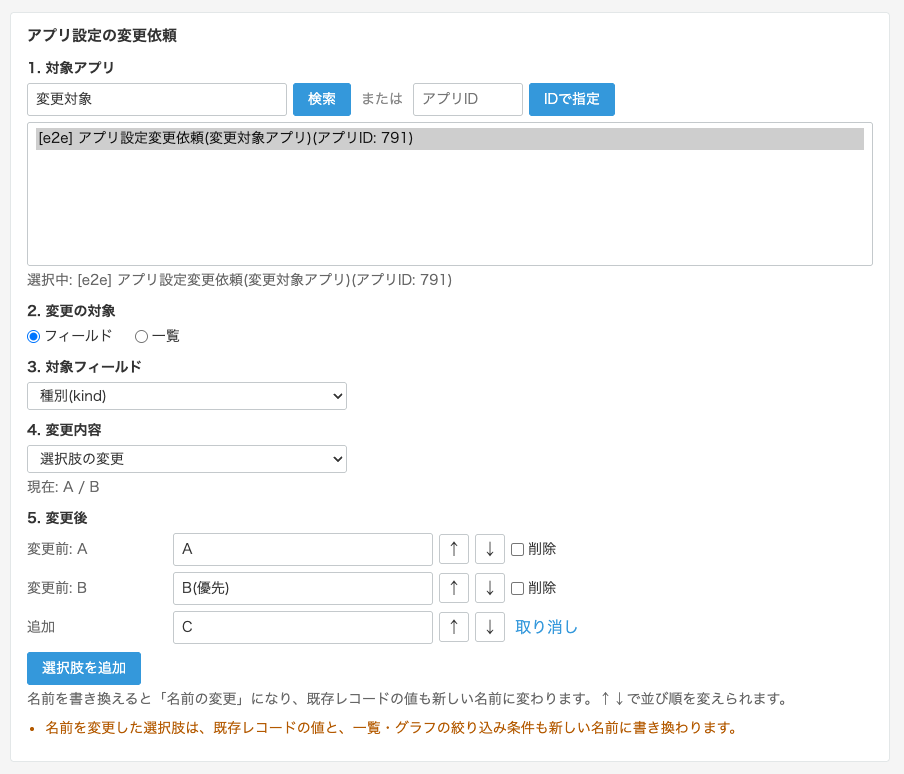
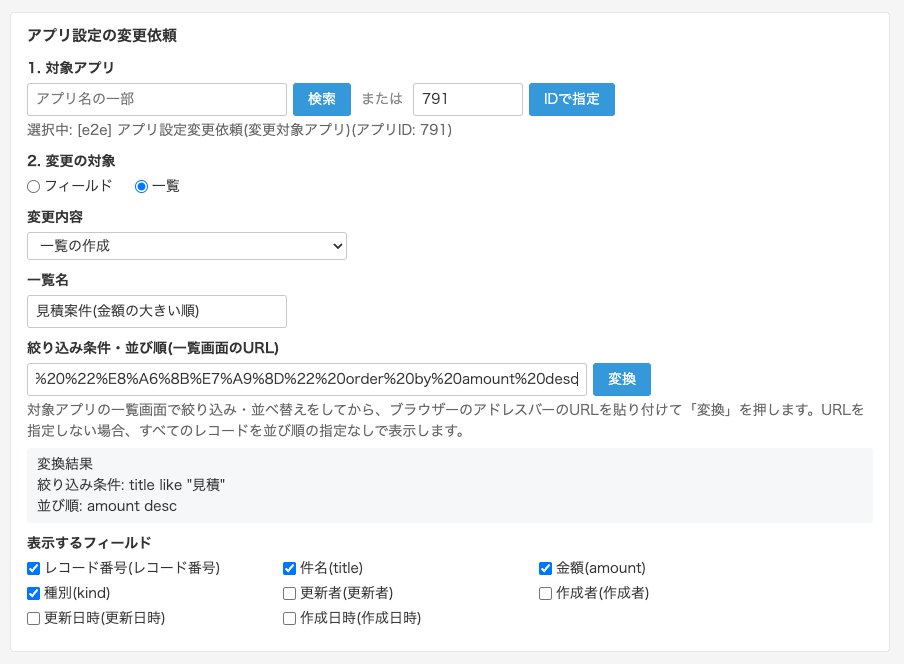
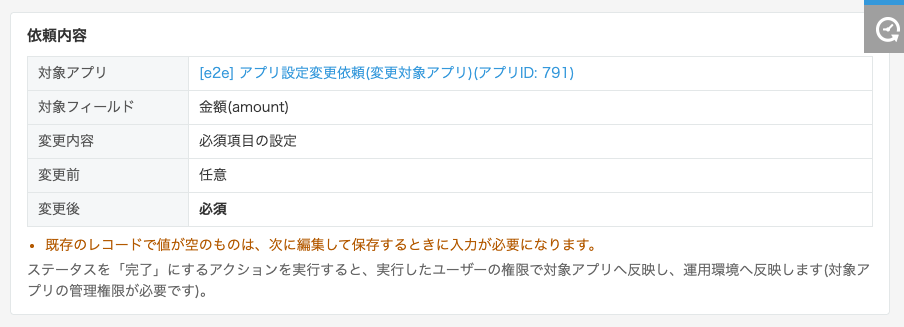
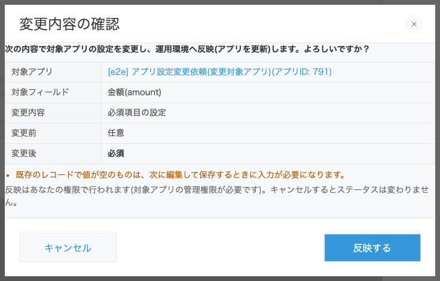
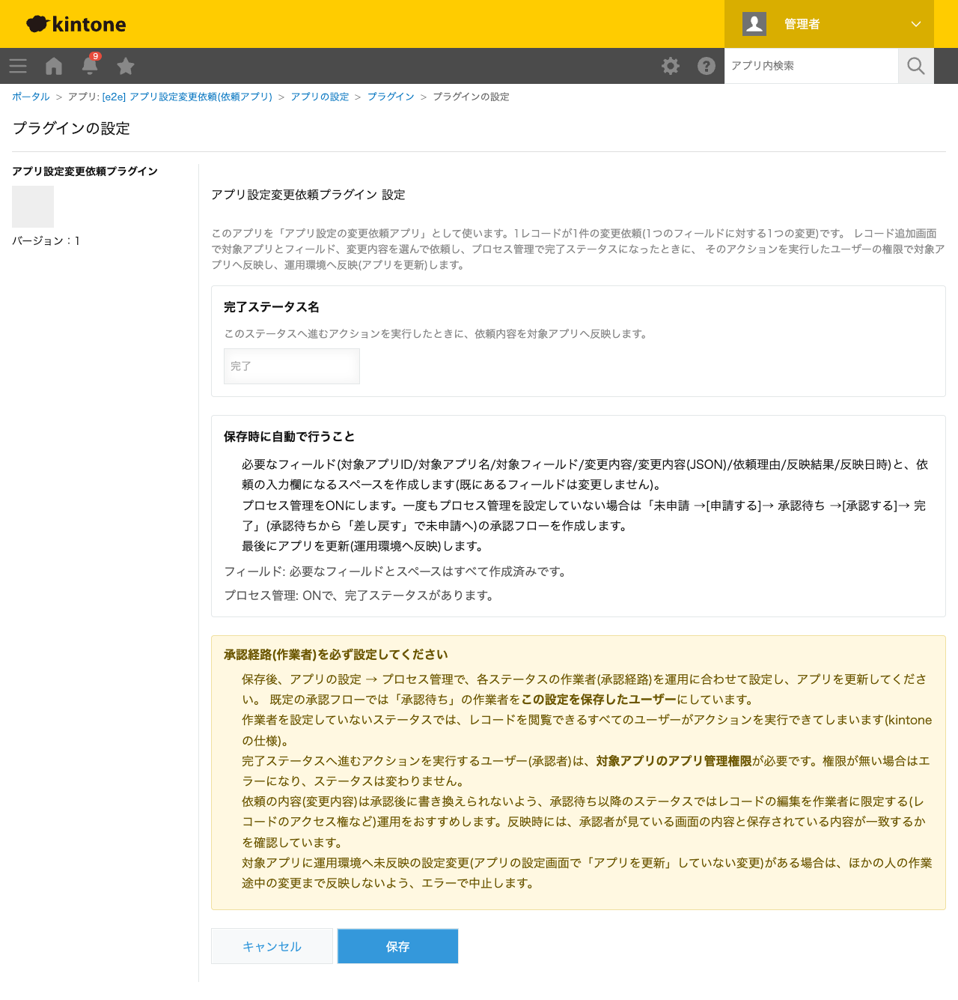

GovAppsプラグイン 安全性を確認できる無料kintoneプラグイン集
「この項目を必須にしてほしい」「選択肢を増やしてほしい」「こういう一覧がほしい」といったアプリの設定変更を、 チャットや口頭で頼んで管理者がその場で直す運用では、誰が・いつ・何を・なぜ変えたかが残りません。 このプラグインを使うと、設定変更をレコードで依頼し、kintoneのプロセス管理で承認されたときに、 REST APIで対象アプリへ自動で反映(アプリの更新まで)します。依頼アプリのレコードがそのまま アプリ設定の変更履歴(変更管理台帳)になるため、ガバナンスや監査の説明にも使えます。 フィールド名・フィールドコード・必須・重複禁止・初期値・選択肢・文字数/値の範囲・フィールドの削除と、 一覧の作成・修正・削除に対応しています。
現場の担当者が依頼アプリでレコードを追加し、対象アプリをアプリ名で検索して選び、「件名(title)」「必須項目の設定」「必須」を選んで、依頼理由に「件名の入力漏れが多いため」と書いて申請します。アプリ管理者(承認者)は詳細画面の依頼内容(変更前→変更後)を確認して「承認する」を押すと、確認ダイアログのあと、対象アプリの設定が変更されアプリが更新されます。反映結果と反映日時は依頼レコードに記録されます。
kintoneのアプリ設定は、画面からはいつ誰が何を変えたかを確認できません。このプラグインで設定変更を依頼経由に統一すると、依頼アプリのレコード(依頼者・依頼理由・変更前と変更後・承認者・ステータスの履歴・反映日時)が、そのまま設定変更の記録になります。監査で「この項目はいつから必須なのか」「誰の判断で選択肢を変えたのか」を聞かれたときも、依頼アプリを検索すれば答えられます。
ドロップダウンの選択肢を「B」から「B(優先)」に名前変更し、「C」を追加する、といった依頼ができます。名前変更はkintoneの仕様に沿って送るため、既存レコードの値も、一覧・グラフの絞り込み条件も新しい名前に書き換わります(検証環境で確認済み)。選択肢の削除では、既存レコードに値が残ることを依頼画面・確認ダイアログで警告します。
依頼者は対象アプリの一覧画面で「件名に『見積』を含む」「金額の大きい順」のように絞り込み・並べ替えをして、そのURLを依頼画面に貼り付けて「変換」を押すだけです。URLの条件はフィールドコードの絞り込み条件・並び順に変換されて依頼内容として保存され、承認されると対象アプリに一覧が作成されます。一覧名・条件の修正や、一覧の削除も依頼できます。
依頼の入力はPCの画面で行います。完了アクションでの反映はモバイルでも動作し、確認画面(ボトムシート)が表示されます。
対象アプリに運用環境へ未反映の設定変更(アプリの設定画面で「アプリを更新」していない変更)がある場合は、ほかの人の作業途中の変更まで反映しないよう、エラーで中止します。




kintoneセキュアコーディングガイドラインに沿って実装時にチェックしています。特に重要な点は次のとおりです。
textContentで組み立て、innerHTMLを一切使用していません(XSS対策)。REST APIはkintone自身へのkintone.api()のみで、外部サーバーへの通信や外部ライブラリはありません。詳細な確認項目・確認日は下記GitHubのチェックリストに全項目を掲載しています。

依頼の入力では、アプリの検索・選択時に1〜2回、対象アプリのフィールド取得に1回のREST APIを使います(一覧の依頼では、一覧・プロセス管理・フォームのレイアウトの取得に計3回が加わります)。 一覧画面のURLの変換は、対象アプリの一覧画面を開くのと同じ動作です。 完了アクションでの反映は、依頼レコードの取得・管理権限の確認・フィールド(または一覧)の取得・変更・アプリの更新と反映状況の確認で、1件の依頼につき7〜12回程度です。 API実行数は、依頼アプリ・対象アプリそれぞれの上限にカウントされます。設定画面での保存時は、フィールド・スペース・プロセス管理の作成とアプリの更新でAPIを実行します。